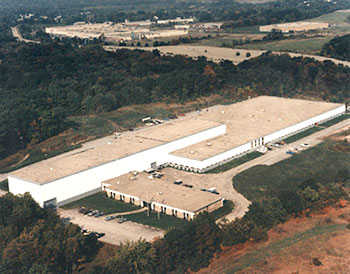

Gorwood Systems, Inc.

Gorwood Campus
Gorwood can accommodate any size destruction project, whether you are doing a periodic office cleanup or a large quantity final removal of records.
Gorwood can provide the personnel to pack and remove all contents on site. If your cleanup is a long term project, we can supply your office with nylon destruction bags that can be stored in a secure location until you are ready for a final pickup.
All materials are transported in a secure company vehicle for final confidential shredding. Our guarantee......no interruption to your daily office flow.......no loud shredder trucks in your parking lot.....no need for expensive electric shredders or maintenance contracts.
Our system is a safe, confidential, and economical solution for your document destruction requirements. Let Gorwood take the responsibility off your shoulders and let you get back to work!